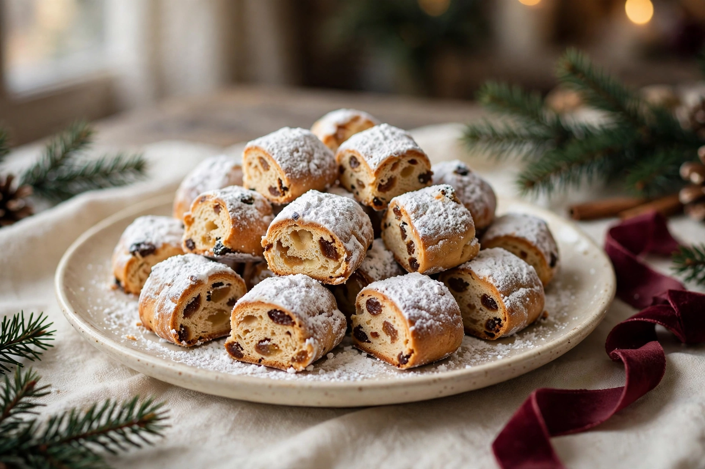

Stollenkonfekt (Mini Stollen Bites)
All the flavor of Christmas stollen in miniature: moist quark-dough bites with raisins and almonds, rolled in butter and confectioners' sugar – no yeast, no waiting.

Contents
Ingredients
Instructions
- Mix the flour, baking powder, sugar, vanilla sugar and spice. Add the quark, butter and egg and knead into a smooth dough. Knead in the raisins and almonds.
- Roll out the dough on a floured surface to about ½ inch (1.5 cm) thick and cut into small rectangles of about 1¼ × 1½ inches (3 × 4 cm) – or shape walnut-sized pieces.
- Place on a parchment-lined baking sheet and bake at 350°F (180°C) for 12–15 minutes until golden.
- Roll the still-warm bites first in melted butter, then generously in confectioners' sugar.
- Let cool completely and store in a tin.
Tip
Dust once more with confectioners' sugar before serving – then the bites look like freshly snowed mini stollen.
📌 Find more cookie ideas on our Pinterest profile:
Cookie Recipes on Pinterest
Cookie Recipes on Pinterest